Как собака друга искала
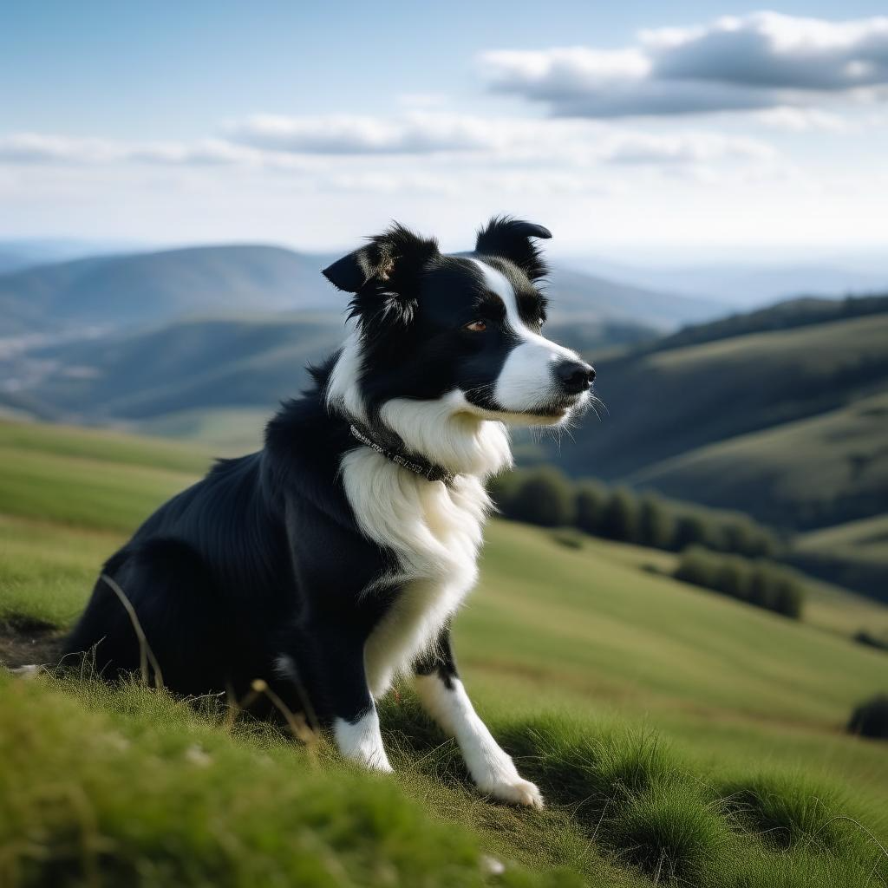
Давно-давно в лесу жила собака. Одна-одинешенька. Скучно ей было.
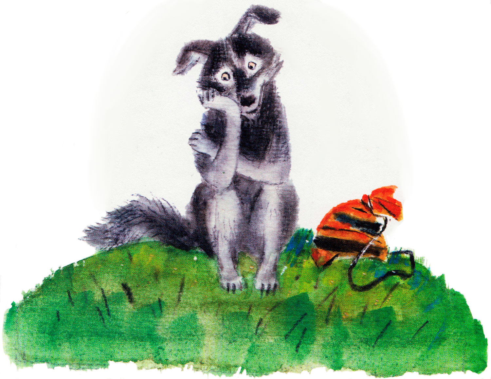
Захотелось собаке друга себе найти. Такого друга, который ничего не боялся бы.
Встретила собака в лесу зайца и говорит ему:
— Давай, зайка, с тобой дружить, вместе жить!
— Давай, — согласился зайка.
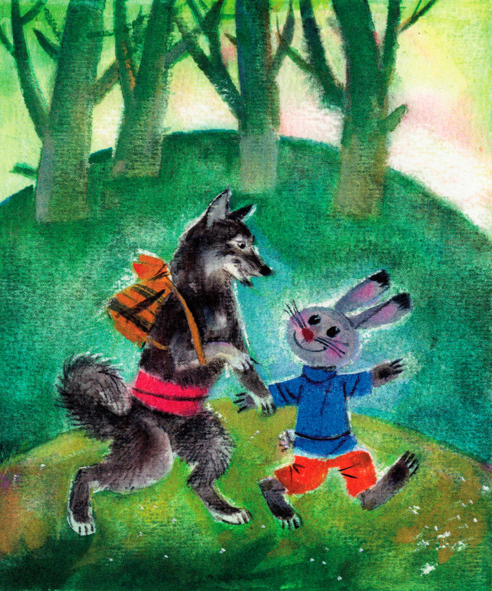
Вечером нашли они себе местечко для ночлега и легли спать. Ночью бежала мимо них мышь, собака услышала шорох да как вскочит, как залает громко. Заяц в испуге проснулся, уши от страха трясутся.
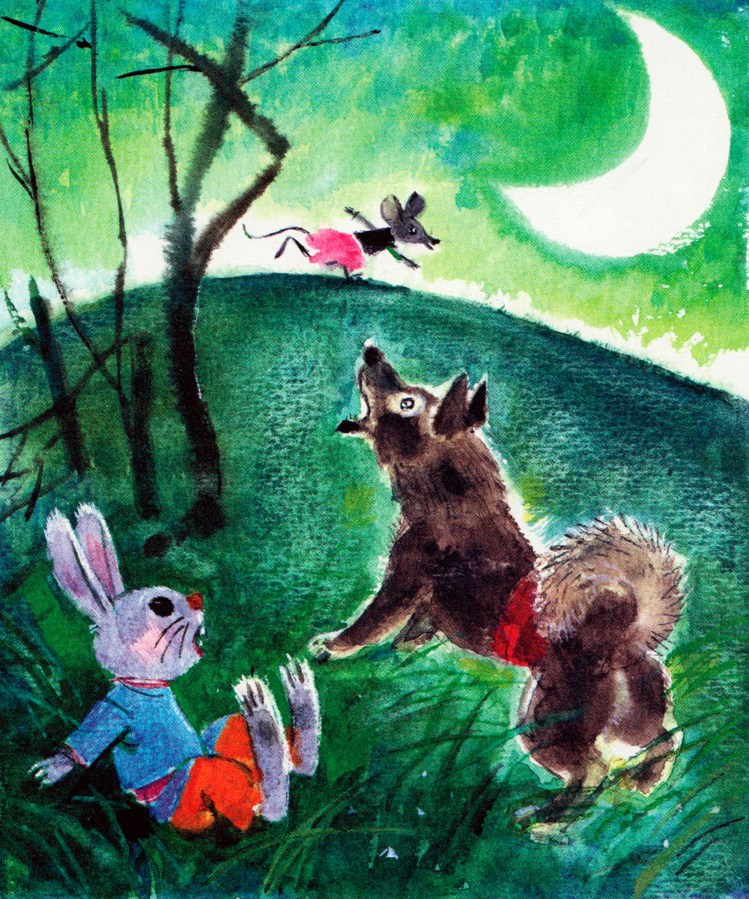
— Зачем лаешь? — говорит собаке. — Вот услышит волк, придет сюда и нас съест.
— Неважный это друг, — подумала собака. — Волка боится. А вот волк, наверное, никого не боится.
Утром распрощалась собака с зайцем и пошла искать волка. Встретила его в глухом овраге и говорит:
— Давай, волк, с тобой дружить, вместе жить!
— Что ж! — отвечает волк. — Вдвоем веселее будет.
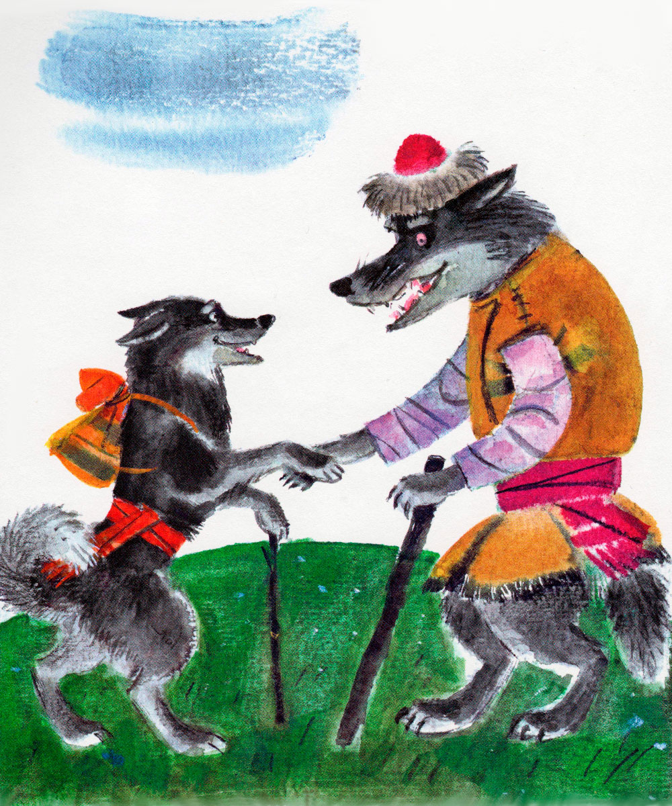
Ночью легли они спать. Мимо лягушка прыгала, собака услышала да как вскочит, как залает громко.
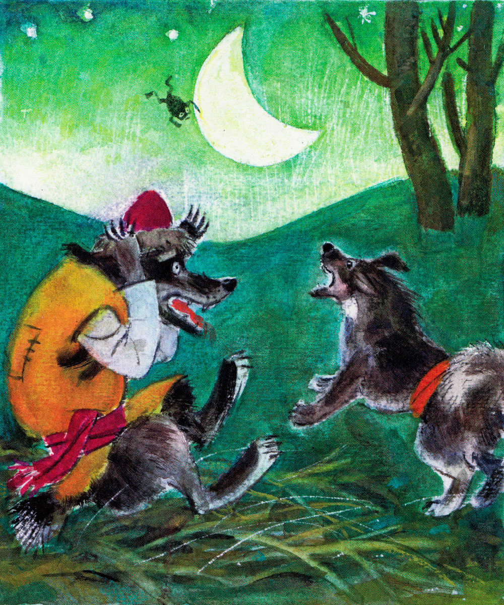
Волк в испуге проснулся и давай ругать собаку:
— Ах ты, такая-разэтакая! Услышит медведь твой лай, придет сюда и разорвет нас.
— И волк боится, — подумала собака. — Уж лучше мне подружиться с медведем.
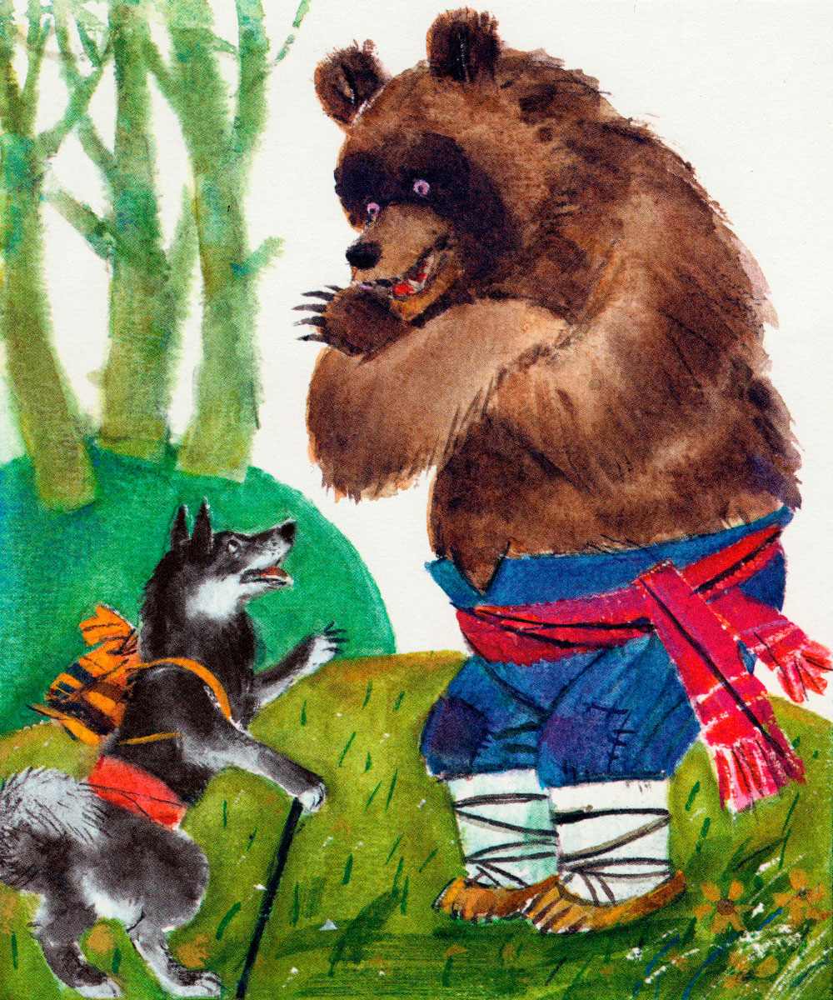
Пошла она к медведю:
— Медведь-богатырь, давай дружить, вместе жить!
— Ладно, — говорит медведь. — Пошли ко мне в берлогу.
А ночью собака услышала, как мимо берлоги уж полз, вскочила и залаяла.
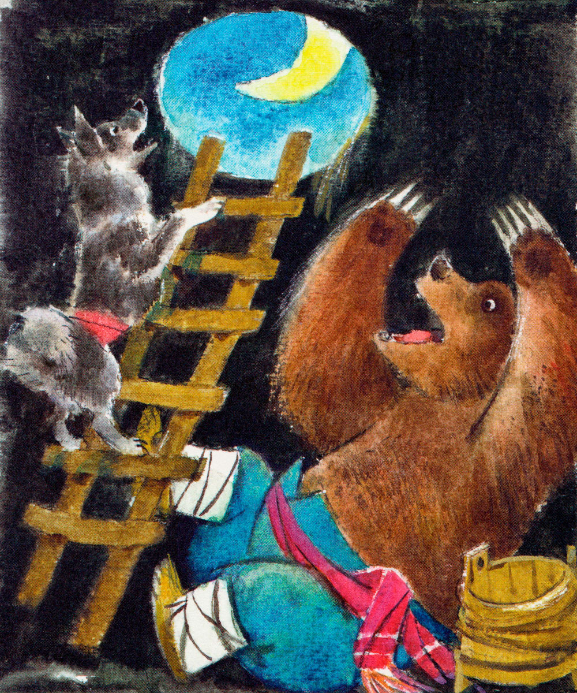
Медведь перепугался и ну бранить собаку:
— Перестань, перестань! Придет человек, шкуры с нас снимет.
— Ну и дела! — думает собака. — И этот оказался трусливым.
Сбежала она от медведя и пошла к человеку:
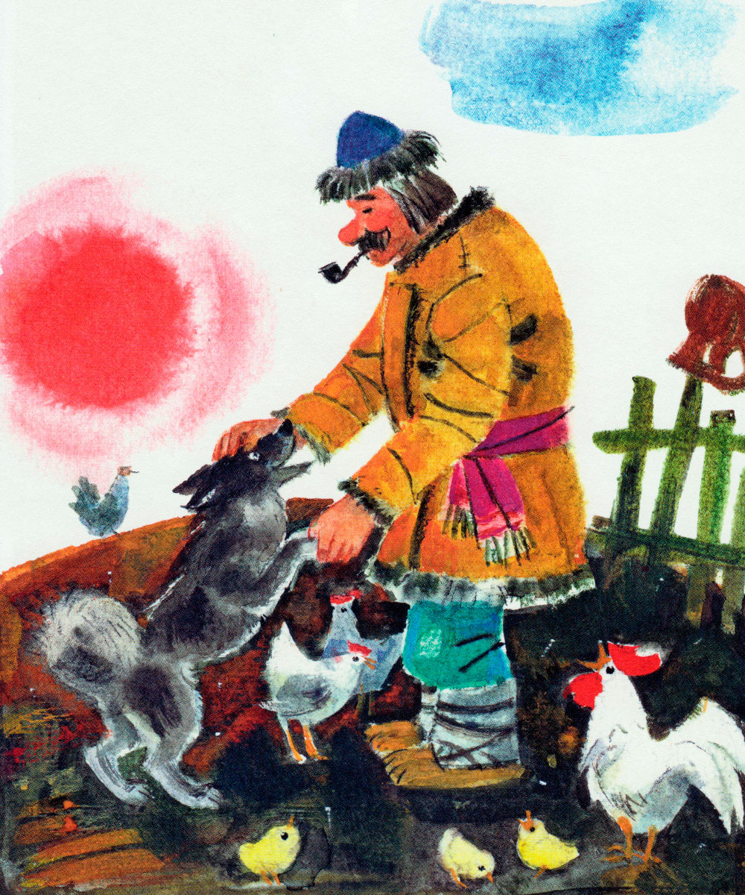
— Человек, давай дружить, вмести жить!
Согласился человек, накормил собаку, теплую конуру ей построил возле своей избы.
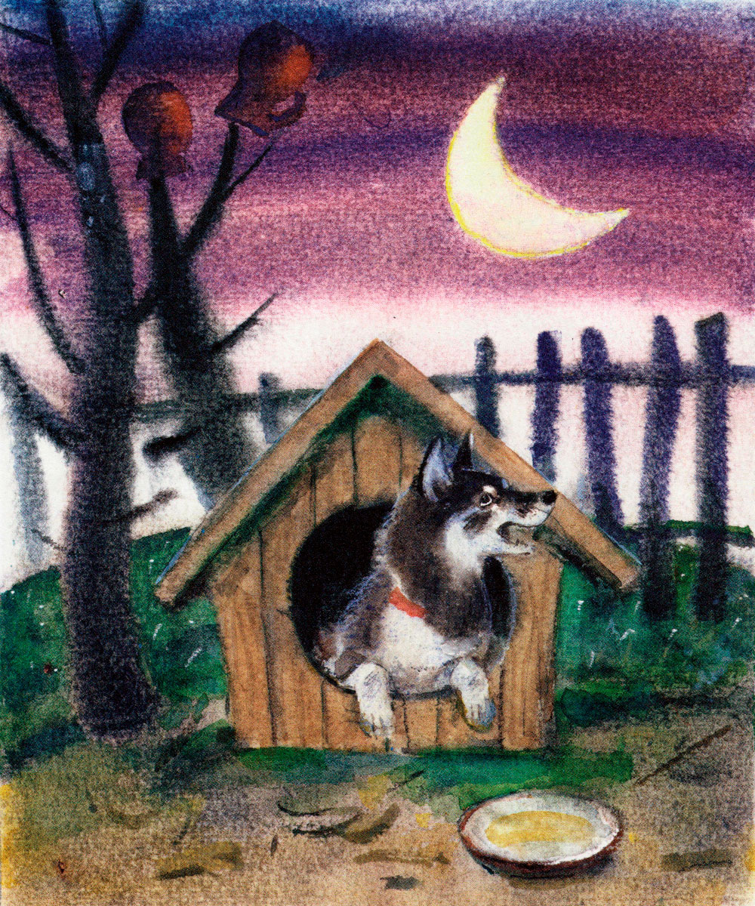
Ночью собака лает, дом охраняет. А человек не ругает ее за это — спасибо говорит.
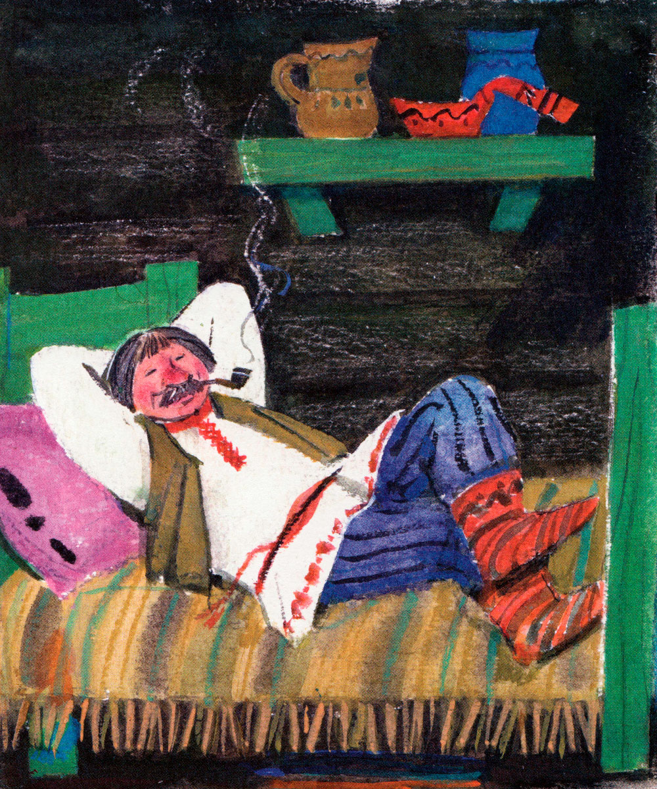
С тех пор собака и человек живут вместе.
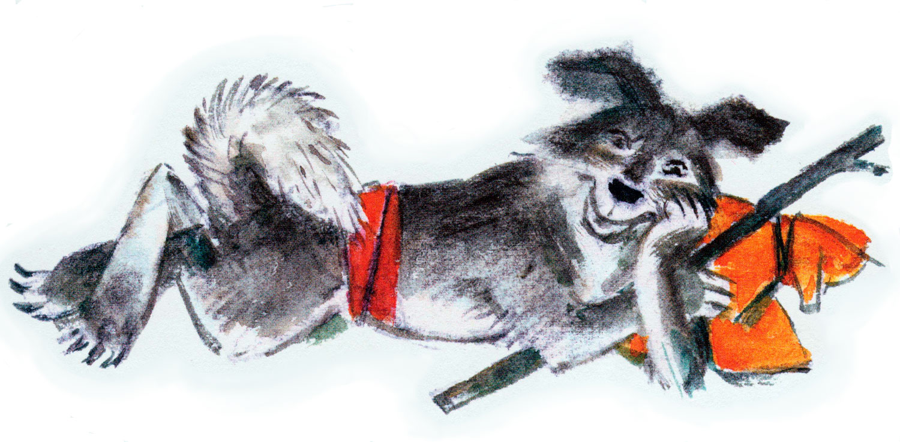